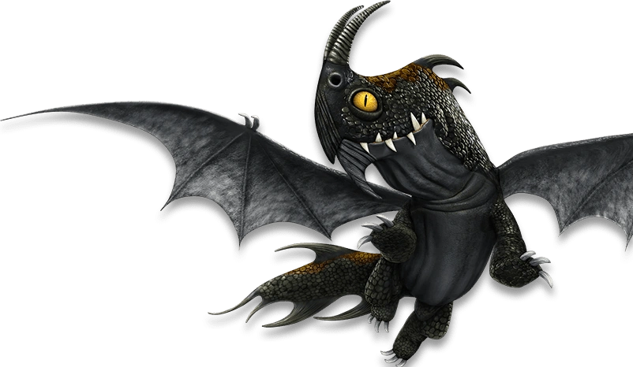

Le dragon furtif de la nuit
| Catégorie | Foudroyeurs |
| Type de feu | Boules de feu concentrées |
| Taille | 7 mètres |
| Envergure | 11 mètres |
| Poids | 550 kg |
| Couleur | Noir profond |
| Apprivoisable | Oui |
La Terreur Nocturne est un dragon noir très discret, parfaitement adapté au vol de nuit. Ses écailles sombres l'aident à disparaître dans l'obscurité, similaire à la Furie Nocturne. Dragon agile et rapide, il est excellent pour les missions de reconnaissance et les attaques surprises nocturnes. Son tempérament est généralement calme mais défensif.